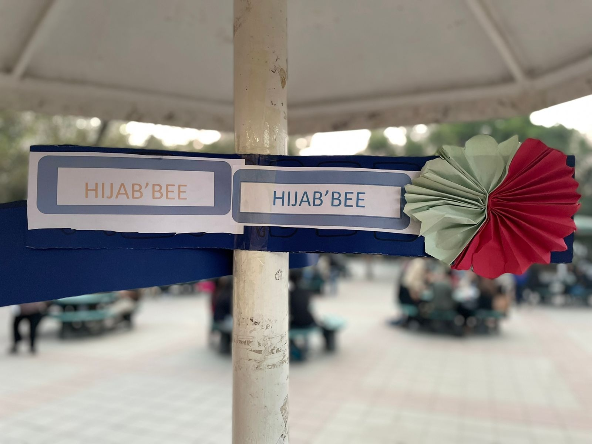
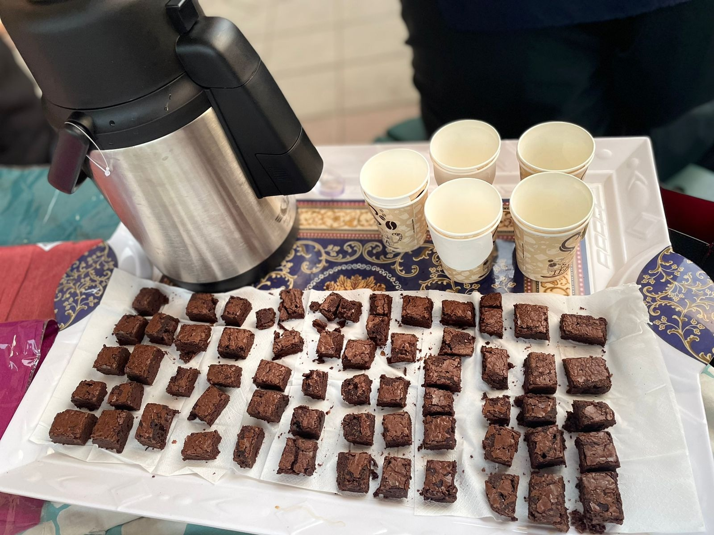

01 / 05Event announcement
A night to return.
The Sacred Retreat 2.0
A quiet night, good company, and time to reconnect with Allah. Join LRS for a night of Nafl Aitekaf, whether you attended before or are joining for the first time.
View DetailsEvents
A night to return.
A quiet night, good company, and time to reconnect with Allah. Join LRS for a night of Nafl Aitekaf, whether you attended before or are joining for the first time.
View Details
Sada-e-Haq · A Call for Solidarity · Day 2
An invitation to reflect on the place of Al Aqsa in our faith and the meaning of solidarity with Palestine.
View Details
A halaqah, good conversations, and snacks.
A relaxed gathering on the female side of the LUMS Masjid, with space for conversation, a halaqah, and a cup of chai.
View Details
Grounding your heart in Tawakkul.
Explore what it means to trust Allah when life feels uncertain, and reflect on finding inner peace through Tawakkul.
View DetailsQuran circle
An in-depth journey through Surah Al-Hadid: faith, the fleeting nature of dunya, and the heart’s journey back to Allah. Returning participants and first-time attendees are welcome.
The supplied poster says 4:45 PM onwards. Confirm the current time and whether a session is running before attending.
View DetailsLRS archive · contextual imageLRS archive · contextual imageNo events match these filters. Try another date range, explore recurring programmes, or contact LRS for the latest updates.